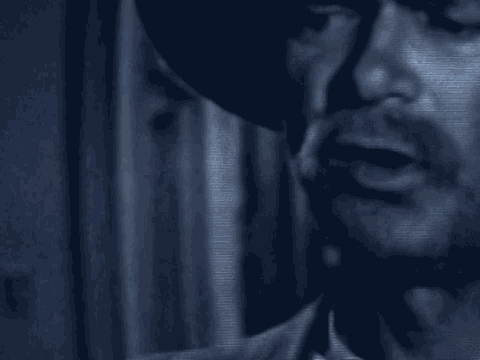

12 A. Yes, sir.
13 Q. And were all of these people, including yourself, employed
14 by Ultimate Security?
15 A. They were employed by Ultimate Security, yes.
16 MR. FITZGERALD: And if I could also show a
17 photograph, Government Exhibit 3012 and offer it at this time.
18 THE COURT: Received.
19 (Government Exhibit 3012 received in evidence)
20 MR. FITZGERALD: And display it?
21 THE COURT: Yes.
22 BY MR. FITZGERALD:
23 Q. And Mr. Katunda, does that photograph show where each of
24 the people, including yourself, were at or about the time of
25 the explosion?
7525
1 A. Yes, sir, that's how it was.
2 Q. Okay. After you were rescued from the rubble, did you
3 learn where Mtendeje, the guard that was in the room with you,
4 was?
5 A. What?
6 (Confers with interpreter)
7 A. Well, it was very difficult to understand. After two
8 days, that's when I was told that she passed away.
9 Q. And was she found at the scene? Was she killed at the
10 scene?
11 A. She was lying on my stomach.
12 Q. And as to the two people in the room next door,
13 Mr. Mahundi and Mr. Mwila, were they also killed in the
14 explosion?
15 A. Also were passed away.
16 Q. And Mr. Paul, was he also killed?
17 A. Yes, please, he was passed away also.
18 Q. And Mr. Nyumbu, was he also killed?
19 A. That was at the front, at the front of the embassy, passed
20 away.
21 Q. Now, what happened after you were taken out from the
22 rubble? Where did you go?
23 A. What happened?
24 Q. What happened after other people helped you out of the
25 rubble on August 7th?
7526
1 (Confers with interpreter)
2 A. I was sent to the hospital at the Muhimbili hospital and
3 being admitted.
4 Q. And what injuries did you have at that time?
5 A. First of all, it was -- the first one was here. I had,
6 when they were trying to rescue me by the bulletproof glass,
7 it wanted to cut me down here. Also got another one my head,
8 others at my -- it is over here.
9 My left shoulder is dislocated, dislocated, including
1